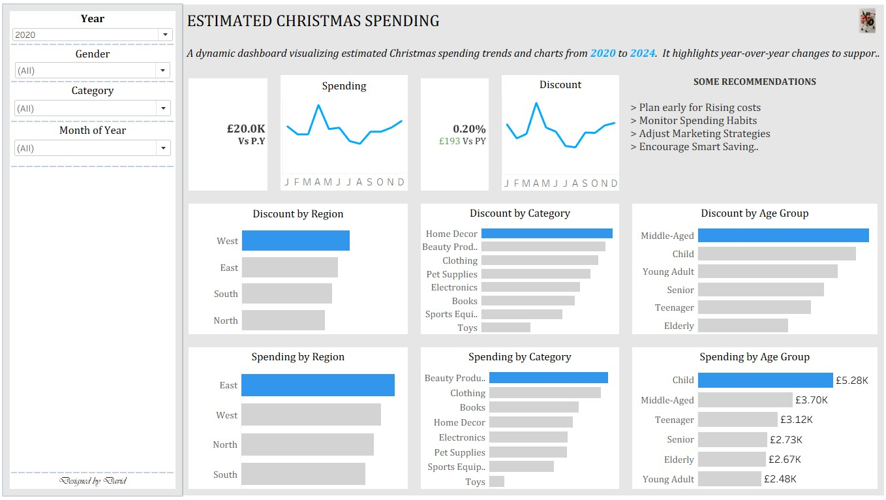

Estimated Christmas Spending
This dashboard provides an interactive analysis of estimated Christmas spending from 2020 to 2024.
It highlights key performance indicators, including total spending and discounts, with year-on-year comparisons.
Monthly time-series charts reveal trends, seasonality, and spending fluctuations.
Segmented visuals compare spending and discounts by region, category, and age group.
Dynamic filters enable drill-down analysis to support data-driven decision-making.

Churn analysis
This churn dashboard presents an overall snapshot of customer attrition, financial performance, and salary behavior. It highlights key indicators such as a 36% churn rate, total salary of £43M, and a balance of £31.4M for quick assessment. The visualizations explore relationships between customer churn score, gender, and geography to identify high-risk segments.

Interractive Dashboard
This interactive Excel dashboard summarizes key performance indicators including total sales, total quantity, and average discount for high-level monitoring. It uses time-series analysis to track sales trends across order dates and comparative bar charts to evaluate regional performance. Dimensional slicing by region, customer, and salesperson enables drill-down analysis and segmentation.

Superstore Dashboard
This dashboard provides a high-level overview of a sample superstore's analysis. It displays total sales of $2,297,200.86 and a total profit of $286,397.02. The dashboard also shows sales broken down by category (Technology, Furniture, Office Supplies), segment (Consumer, Corporate, Home Office), order dates, and region (West, East, Central, South). Key performance indicators include a total quantity of 3787 and an average discount of $0.16.

End of year Sales
The dashboard indicates solid sales growth for Tesco UK in 2023, led by strong order volumes and improving customer value. Fresh Produce is the top-selling category, with London contributing the highest regional sales. Monthly performance remains stable with a clear year-end uplift, reflecting seasonal demand and effective sales strategies.

NNPC Import & Export
The NNPC Import & Export Dashboard for 2024 shows a positive trade balance of $9.7 billion, with exports totaling $22.5 billion and imports at $12.8 billion. Export volumes peaked mid-year, consistently surpassing imports. India led as the top export destination, followed by European and Asian countries. The South region of Nigeria accounted for the highest import value. Overall, the data reflects strong export performance and regional import disparities.